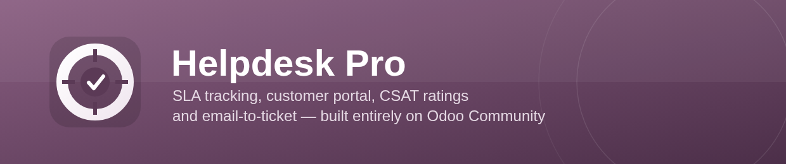

SLA tracking, a customer portal, and CSAT ratings — built entirely on core Odoo Community.
Policies matched by team, priority, and tag. Deadlines and status are computed against each team's real working calendar, so nights and weekends never count against a ticket. A live On Track / At Risk / Breached badge shows on the kanban card, list, and form.
Customers see their own tickets — reference, subject, status, and full communication history — with access enforced by record rules, not just a filtered list.
A one-click Good / Okay / Bad rating email goes out when a ticket closes, secured by a signed, single-use link. Scores roll up into a per-team average.
Give a team an email alias and incoming mail becomes a ticket automatically. Replies from either side thread back into the same conversation.
Reusable reply snippets, optionally scoped to a team, previewed and inserted into a ticket in one click.
Fold a duplicate ticket's messages, followers, and attachments into the one you're keeping, with a back-reference left behind.
A pivot/graph Ticket Analysis view plus per-team SLA compliance and average resolution stat buttons.
Install with realistic demo teams, policies, and tickets to try it immediately. Ships with an Arabic (ar) translation alongside the English source strings.
Helpdesk Pro depends only on core Odoo Community
(mail, portal, resource)
— no Enterprise features, no paid dependencies. It's released
under LGPL-3, with the source, tests, and CI on GitHub:
github.com/Zahoor-ishfaq/odoo-helpdesk-pro.
Questions and bug reports are welcome via the Store Q&A tab or as a GitHub issue.